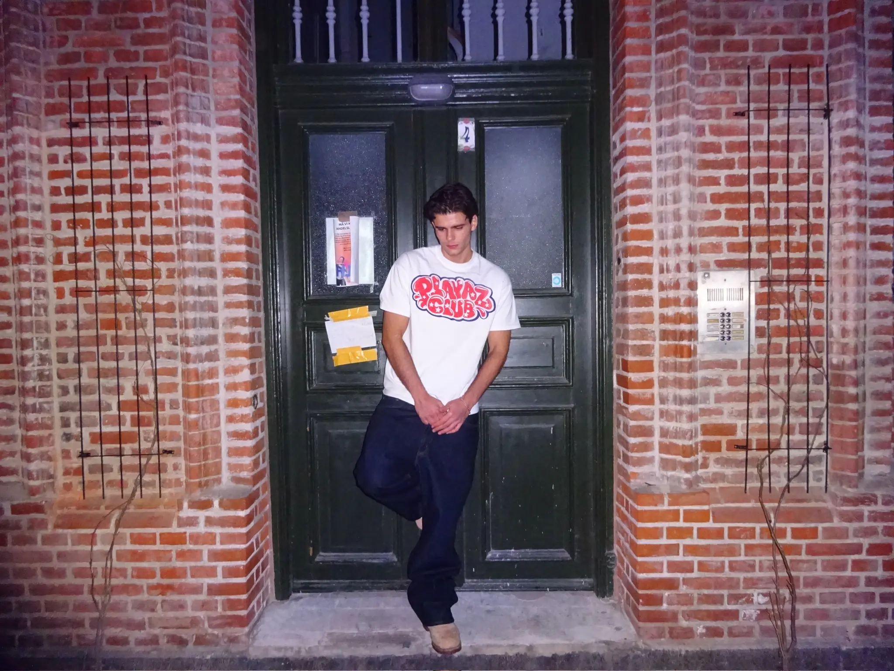

DENIS PECI BUZI
MULTIMEDIEDESIGNER
Jeg er opvokset på Amager og studerer Multimediedesign på Erhvervsakademiet, hvor jeg udvikler mine kompetencer inden for digital design, brugeroplevelser, webudvikling og digital kommunikation. Uddannelsen giver mig mulighed for at kombinere kreativitet og teknologi, hvilket er et område, jeg finder særligt spændende
Som en del af min erhvervserfaring har jeg arbejdet hos BLS HAFNIA som kundeservicemedarbejder og lagermedarbejder. Her opnåede jeg erfaring med kundekontakt, ordrehåndtering, lagerstyring og samarbejde på tværs af forskellige arbejdsområder. Arbejdet har styrket mine kommunikative evner, min ansvarsfølelse og min forståelse for, hvordan en moderne virksomhed og webshop fungerer i praksis.
Når jeg ikke studerer, bruger jeg meget af min tid på mine interesser. Jeg er passioneret omkring basketball og amerikansk sport generelt, hvor jeg følger både kulturen, historierne og konkurrencerne tæt. Derudover har hiphop og hiphop-kultur altid været en stor del af min identitet og er en vigtig inspirationskilde for mig.
Fashion er også en stor interesse, særligt streetwear. Jeg er fascineret af, hvordan mode kan fungere som et kreativt udtryk for personlighed og kultur. Min interesse for mode er blevet styrket gennem min erfaring hos BLS HAFNIA, hvor jeg har fået et indblik i branchen fra et professionelt perspektiv.
På mit 1. semester har jeg fået en grundlæggende forståelse for designprocesser, brugercentreret design, digital kommunikation og udvikling af digitale løsninger. Jeg har lært at arbejde mere struktureret med projekter, samarbejde i grupper og omsætte idéer til konkrete løsninger. Semesteret har styrket både mine faglige og personlige kompetencer og bekræftet mig i, at multimediedesign er den rette uddannelsesvej for mig.
Jeg ser mig selv som en ambitiøs og nysgerrig person, der altid er klar til at lære nyt og udvikle sig. Mit mål er at kombinere kreativitet, kultur og digitale kompetencer for at skabe engagerende digitale oplevelser og løsninger.